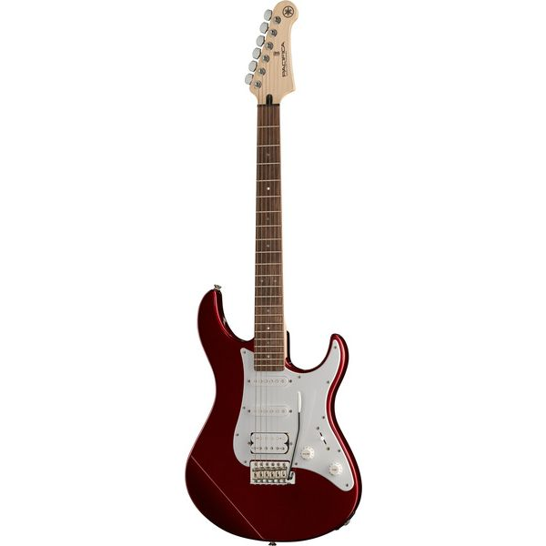
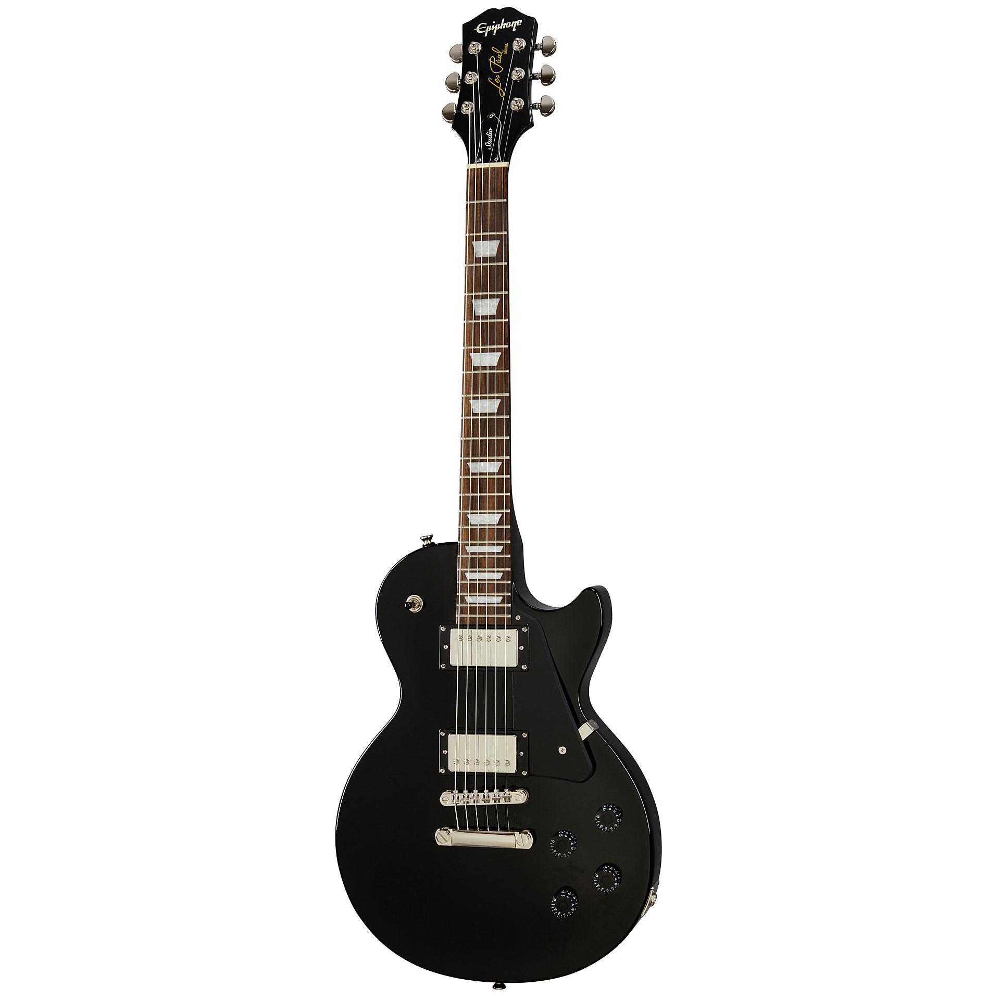
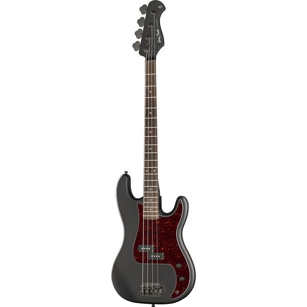
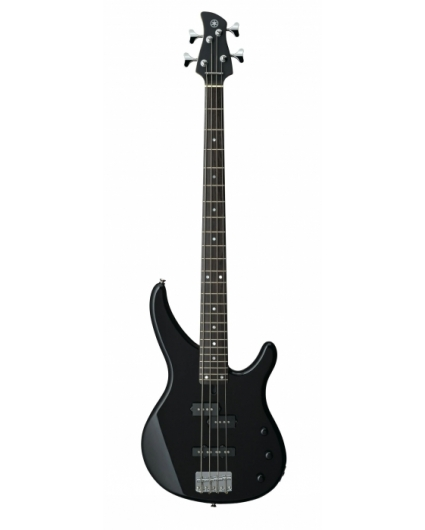
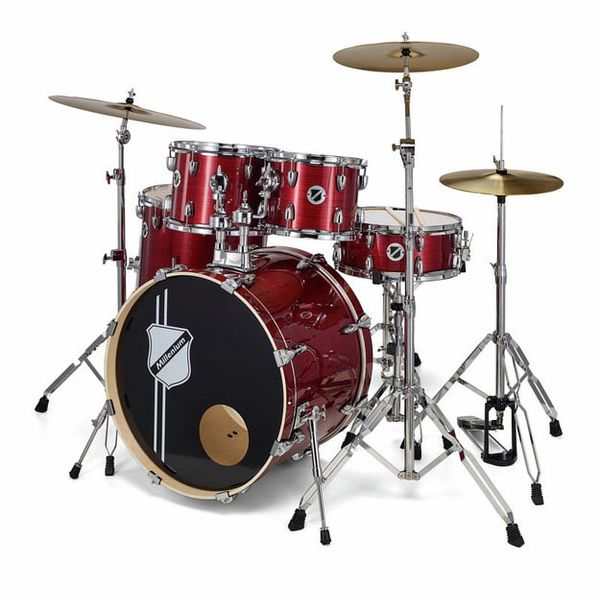
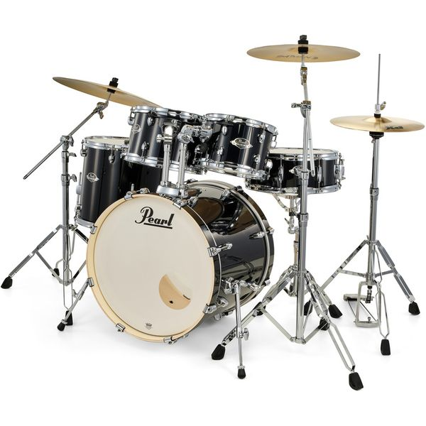
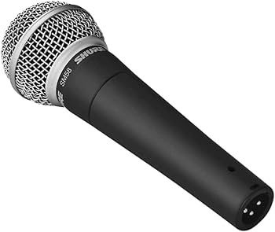
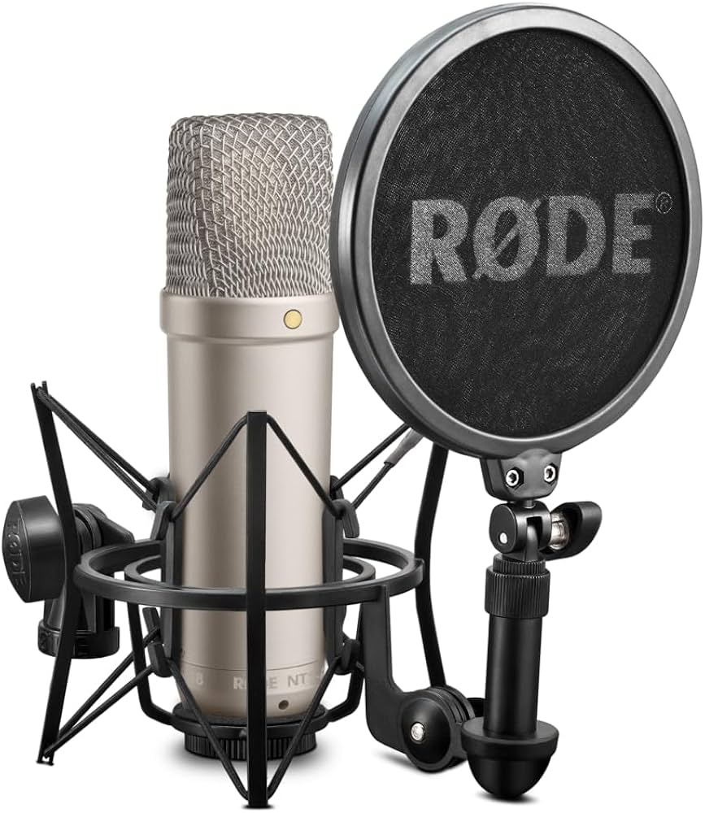
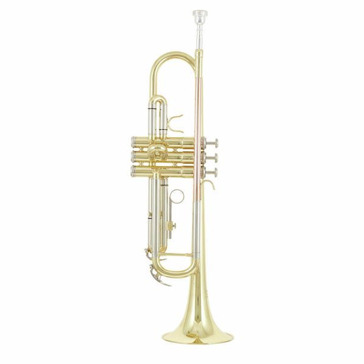
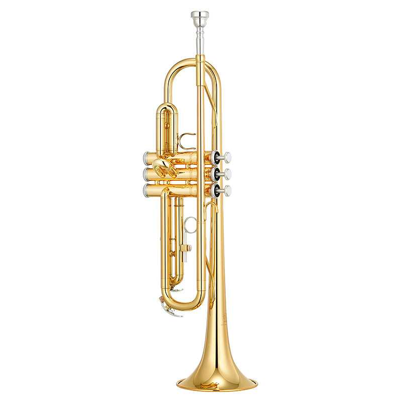

Catàleg visual d'instruments de RIFFHUB. Cada categoria mostra dos exemples ràpids i un enllaç per veure la fitxa completa del tipus d'instrument.

Yamaha Pacifica 112J
Guitarra elèctrica molt versàtil per principiants. Té configuració HSS que permet sons nets i distorsionats.

Epiphone Les Paul Studio
Guitarra amb so potent i càlid ideal per rock. Té humbuckers que redueixen soroll i augmenten sustain.

Harley Benton PB-20 SBK
Baix senzill ideal per començar a tocar. Té so greu i definit tipus Precision.

Yamaha TRBX174
Baix versàtil amb sistema P/J. Ofereix sons equilibrats per molts estils.

Millenium MX422 Standard Set
Bateria completa per principiants amb tot inclòs. Té muntatge senzill i so bàsic correcte.

Pearl Export Series
Bateria acústica molt popular per la seva qualitat. Té so potent i estructura robusta.

Shure SM58
Micròfon estàndard per veu en directe. És molt resistent i fiable.

Rode NT1-A
Micròfon professional d'estudi amb molt baix soroll. Ofereix gran qualitat de so.

Thomann TR 200 Bb Trumpet
Trompeta bàsica per estudiants principiants. Inclou accessoris i estoig. És fàcil de tocar.

Yamaha YTR-2330
Trompeta molt utilitzada en escoles. Té afinació precisa i so clar. És fàcil per aprendre.